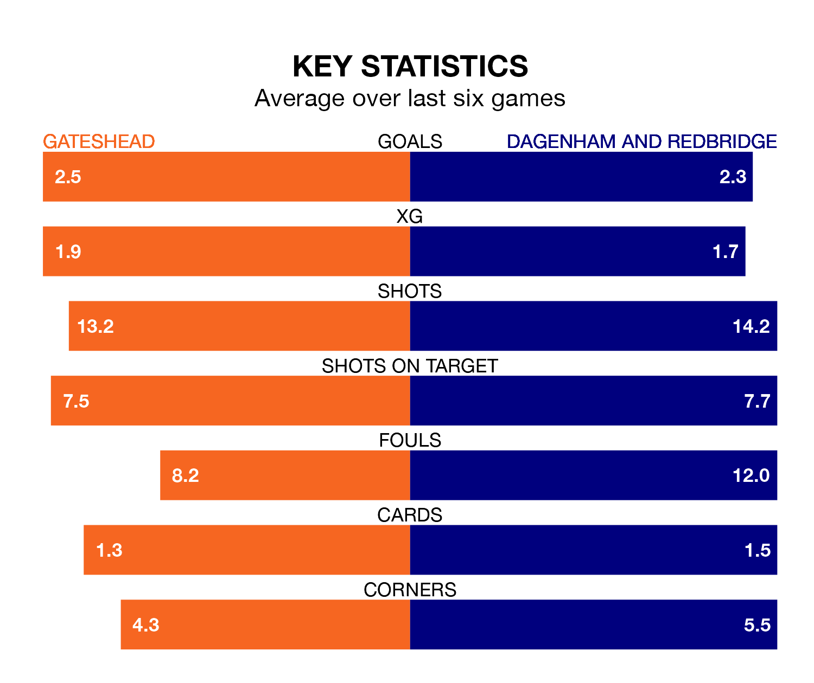

Dagenham and Redbridge travel to Gateshead on late Tuesday in the National League.
The visitors come into the game on the back of a win in their last match, having beaten Altrincham 3-1 at home, with goals from Joshua David Rees, Harry Phipps and Ryan Hill.
The Tynesiders, meanwhile, lost their last match, 3-2 against Solihull Moors, with their goals scored by Ben Worman and Dajaune Brown.
With 69 goals in 36 games so far this season, Gateshead are the league's joint-second-highest scorers with 1.9 goals per game. And they are conceding fewer than average, letting in 50 goals at a rate of 1.4 per game.
Dagenham & Redbridge, meanwhile, are below average scorers, with 1.4 goals per game, compared to a league average of 1.5. They have also conceded 1.4 goals per game.
In the last 10 years, Gateshead and Dagenham & Redbridge have played each other on nine occasions. Gateshead won six of them, Dagenham & Redbridge one, and they drew twice.
On average, the Tynesiders scored 2.2 goals and Dagenham & Redbridge 0.8 in those matches.
Their last meeting was on August 15, when Gateshead won 4-2 away.
The Tynesiders are sixth in the table after 36 games, of which they have won 16 and drawn nine, earning 57 points.
The visitors are seven places behind the home team in 13th, with 12 wins and nine draws putting them on 45 points.
Gateshead are in mixed form in the National League, with three wins and a draw from their last six games.
With two wins and two draws over that period, Dagenham & Redbridge's form is slightly worse – they have taken eight points from 18, compared to Gateshead's 10.
Updated: 09:34 (UTC), 08/03/24